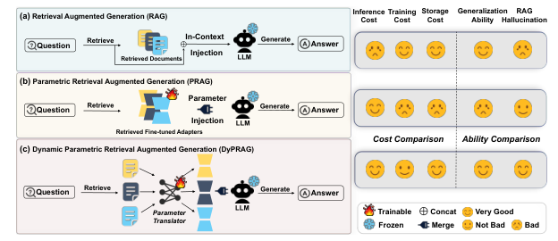
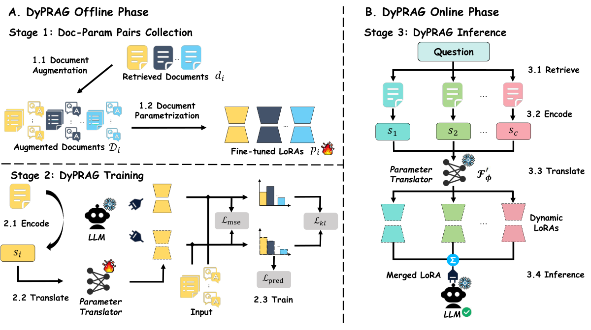
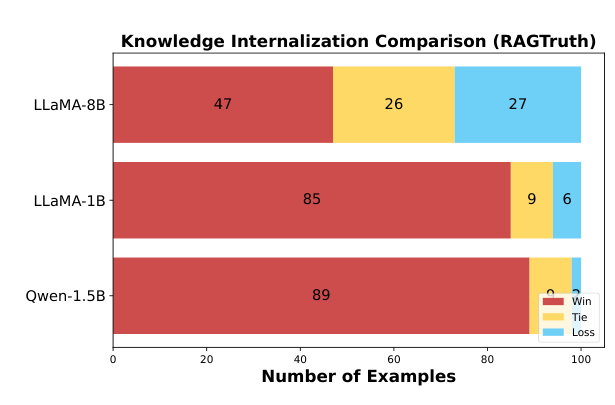

RAG 的两难：长上下文推理贵，参数注入存储贵
知识密集型 QA 的标准解法是 RAG：检索 top-$c$ 文档拼进 prompt。它有两个痛点。第一是钱——上下文从几百 token 涨到几千 token，推理 FLOPs 关于长度 $O(c|d|)$ 线性涨，K-V 缓存线性涨；第二是病——论文称之为 RAG hallucination：当 LLM 内部参数知识与外部文档冲突时（比如模型记错了一个事实，而文档写着正确版本），模型经常无视文档、坚持自己记错的版本。
PRAG 给出第二选择：参数注入。离线把每篇文档重写成多版本 + 生成 QA 对，再为每篇文档单独微调一个 LoRA；在线时检索到哪篇，就把对应 LoRA 加载进来，上下文里只剩 query。推理成本和 closed-book 一样低。但代价转移到了存储和训练上：每篇文档一个 LoRA，文档一多就存不下。

Figure 1（精裁）· 三行范式对比。右列笑脸矩阵一目了然：RAG 推理哭脸、PRAG 训练/存储/泛化哭脸；DyPRAG 几乎全笑脸，唯一代价是 online 要跑一次 translator 前向。
核心洞察：PRAG 其实在学一个映射函数，那就直接学它
这是全文最关键的一次"重新表述"。论文把 PRAG 的整个流程翻译成一句话：对每篇文档 $d_i$，离线做 augmentation + LoRA 微调，得到一个参数表示 $p_i$。这个过程本质上在寻找一个映射函数 $F$：
PRAG 对每篇文档都现场跑一遍 augmentation + 训练，相当于对每个新输入 $d_i$ 都重新拟合一次 $F$——这当然贵、当然不泛化。论文的反问极其朴素：为什么不直接训练一个通用的小函数 $F'_\phi$，让它去逼近这个 $F$？
这就是论文真正的范式升级。它不再把 PRAG 当"为每篇文档微调"，而是把 PRAG 产出的所有 $(d_i,p_i)$ 对当成训练数据：用 PRAG 当"老师"，为 $N$ 篇文档各训出一个 LoRA $p_i$；再训一个小 hypernetwork $F'_\phi$（parameter translator），让它从文档嵌入 $s_i$ 直接预测出 $p_i$。老师只用来生产训练对，训完 translator 就可以扔掉——之后任何新文档都走 $F'_\phi$ 现场生成，不再需要 PRAG。
上一篇做的 Generative Adapter 是端到端自监督：直接在 SlimPajama 上训，用外积+SVD 从文档隐藏状态生成 LoRA，不需要任何"老师 LoRA"。DyPRAG 走的是另一条路——两阶段蒸馏：先让 PRAG 为一批文档训出 LoRA 当金标，再教一个小 MLP 模仿这些金标。前者无标签但需要精巧的外积结构；后者借用了 PRAG 已经验证有效的 LoRA 作为监督信号，但依赖"老师足够好"。这是 hypernetwork 文献里两种经典路线：自蒸馏 vs 任务蒸馏。
三阶段流水线：收数据、训翻译器、在线即插即用
论文把整个系统切成三个阶段，Figure 2 画得很清楚。

Figure 2（精裁）· 左 A 部分 offline：Stage 1 文档增强 + 参数化，产出 (文档, LoRA) 对；Stage 2 用 S_i 经 translator 预测 LoRA，三重损失对齐。右 B 部分 online：检索到文档 → 编码成 S → translator 现场出 LoRA → 合并进底座推理。
Stage 1：Doc-Param 对收集（沿用 PRAG）
对每篇文档 $d_i$，PRAG 流程做两件事：文档增强——让 LLM 把 $d_i$ 改写成 $n$ 个版本，并生成 $m$ 个 QA 对 $(q_i^j,a_i^j)$；参数化——在这些增强样本上用 LoRA 微调底座，得到 $p_i$。这个阶段完全沿用 PRAG，没有新东西。
Stage 2：训 parameter translator
收集到 $N=4800$ 对 $(d_i,p_i)$ 后，冻结底座，只训 translator。下一章节讲它的结构和损失。
Stage 3：在线推理
来了 query，检索 top-$c=3$ 篇文档，每篇过底座一次取最后 token 隐藏态，过 translator 出 LoRA，把多个 LoRA 按 $\Sigma$ 合并进底座，然后只用 query 推理——上下文里不再有任何文档。
翻译器结构：一个极薄的 MLP，按层索引分别吐 B 和 A
论文的 translator 设计得意外简单。对每篇文档 $d_i$，先用底座 $M$ 编码，取最后一个 token 位置的隐藏态 $s_i\in\mathbb{R}^h$。然后对每个 Transformer 层 $l$，用一个独立的小 MLP 把 $s_i$ 映射成该层的 LoRA 矩阵。
几个设计细节值得注意：
1. 输入是 $s_i\oplus\mathrm{idx}_l$——把层索引 $l$ 拼进输入。因为同一个 translator 要给所有 $L$ 层产权重，它必须知道"现在在生成哪一层"。这是一个极简但有效的条件化手段：不共享参数也能按层产出不同矩阵。
2. B 和 A 分别由两套 MLP 生成，不是一个 MLP 一次性输出整个 $BA$。这样 LoRA 的两个因子各自有独立的表达空间，和标准 LoRA 训练时 $A$ 随机高斯初始化、$B$ 零初始化的对称性吻合。
3. 只改 FFN——up / down / gate 三个投影，和 PRAG 一致；attention 不动。
论文直接取最后一个 token 的隐藏态 $s_i$——这是 LM 做 next-token prediction 时"综合了整段上下文"的位置，相当于一个免费的、任务无关的句向量。它比 mean-pool 保留了更多结构，比 attention pooling 省算力。代价是 $s_i$ 是一个 $h$ 维向量，丢掉了词序和局部结构——这也是为什么消融里 $p$ 要足够大才能装下这些信息。
三重损失：L_pred + 100·L_mse + 0.01·L_kl，各自管什么
训 translator 时，不能只让它"输出和老师 LoRA 长得像的矩阵"——因为 LoRA 是参数空间的对象，两个 LoRA 长得像不代表行为像。论文用三个损失从三个层面对齐：
L_mse（λ=100）：直接在参数空间对齐——生成的 $B_l,A_l$ 和老师的 $B_l^*,A_l^*$ 逐元素 MSE。权重 100 是因为 MSE 数值小，要拉到和 LM loss 同一量级。它保证 translator 输出的形状对。
L_pred：和 PRAG 一样的 next-token 预测损失，在增强数据 $D_i$ 上跑。这是最终目标——不追求和老师像素级像，追求用生成的 LoRA 也能把 $D_i$ 的 QA 答好。
L_kl（λ=0.01）：行为空间对齐——让"老师 LoRA 加持的模型"和"学生 LoRA 加持的模型"在 $D_i$ 上输出的词分布一致。λ 只有 0.01，因为 KL 数值已经在合理范围。它补的是 L_mse 的盲区：两个 LoRA 参数不完全相同，可能行为几乎一样；L_mse 会无意义地惩罚这种差异，L_kl 则直接对齐最终行为。
# 已用 PRAG 为 N=4800 篇文档训出老师 LoRA p_i for (doc, p_teacher) in dataloader: s_i = base_lm.encode(doc)[-1] # 最后 token 隐藏态 p_student = translator(s_i) # 现场生 LoRA L_mse = F.mse_loss(p_student, p_teacher) L_pred = lm_loss(base_lm + p_student, augmented_qa) L_kl = kl_div( (base_lm + p_student).logits(doc), (base_lm + p_teacher).logits(doc).detach(), ) loss = L_pred + 100 * L_mse + 0.01 * L_kl loss.backward() # 只更新 translator 参数；base_lm 和 p_teacher 都冻结
成本账：为什么是 0.04% 而不是 1%
论文给了非常干净的复杂度分析。以 Qwen2.5-1.5B 为例：28 层、隐藏维 $h=1536$、FFN 中间维 $k=8960$、LoRA rank $r=2$。
关键对比：PRAG 要为每一篇新文档存 6.73MB；DyPRAG 不管有多少文档，只存一份 7.71MB 的 translator。4800 篇文档时，PRAG 是 18.66GB，DyPRAG 是 7.71MB——差出三个数量级（0.04%）。在线推理时，DyPRAG 比 PRAG 多两步：encode（把文档过一次底座，因为底座本来就要跑）+ translate（MLP 前向，约 0.13s），但这比把 3 篇文档拼进上下文的 1.20s 快一半。
| 方法 | CWQ F1 ↑ | 推理时间 ↓ | 存储 ↓ |
|---|---|---|---|
| Vanilla | 26.47 | 0.56s (0.47×) | — |
| Standard RAG | 28.32 | 1.20s (1×) | — |
| PRAG | 30.82 | 0.56s (0.47×) | 672 MB（300 文档） |
| DyPRAG (p=2) | 32.66 | 0.56+0.13+0.06s (0.625×) | 7.71 MB (0.011×) |
| DyPRAG (p=4) | 33.26 | 0.56+0.13+0.06s (0.627×) | 15.42 MB (0.023×) |
| DyPRAG (p=16) | 32.08 | 0.621× | 61.70 MB (0.092×) |
| DyPRAG (p=32) | 31.94 | 0.625× | 123.39 MB (0.184×) |
表 1（按论文 Table 3 自绘）· 推理时间拆为 0.56s 底座 + encode + translate。p=4 是甜点：F1 最高、存储只比 p=2 多一倍。
主结果：三个底座 × 四个数据集，DyPRAG 追平甚至超过 PRAG
论文在 LLaMA3.2-1B、Qwen2.5-1.5B、LLaMA3-8B 三个底座上测了 2WQA（多跳）、HotpotQA、PopQA、ComplexWebQuestions。关键结论：PRAG 对每篇文档单独训 LoRA，是 DyPRAG 的"性能上界"（因为老师就是它）；DyPRAG 用一个 4M 翻译器逼近甚至超过了这个上界。
| 底座 | 方法 | 2WQA Avg ↑ | HQA Avg ↑ | PQA ↑ | CWQ ↑ | 总平均 ↑ |
|---|---|---|---|---|---|---|
| LLaMA3.2-1B | Vanilla | 22.52 | 18.79 | 2.26 | 34.94 | 22.39 |
| Standard RAG | 23.12 | 21.38 | 17.65 | 37.39 | 26.99 | |
| PRAG | 27.73 | 21.50 | 23.58 | 35.86 | 26.51 | |
| DyPRAG | 25.31 | 19.97 | 11.33 | 36.86 | 27.57 | |
| DyPRAG-Combine | 29.18 | 26.58 | 29.93 | 38.96 | 31.80 | |
| Qwen2.5-1.5B | Vanilla | 26.87 | 17.76 | 2.87 | 26.47 | 25.79 |
| Standard RAG | 24.31 | 20.73 | 9.97 | 28.23 | 23.17 | |
| PRAG | 27.55 | 18.42 | 21.55 | 30.82 | 27.14 | |
| DyPRAG | 26.46 | 19.67 | 6.64 | 31.94 | 25.56 | |
| DyPRAG-Combine | 25.18 | 27.57 | 22.69 | 33.57 | 27.60 | |
| LLaMA3-8B | Vanilla | 33.02 | 21.29 | 7.96 | 42.44 | 31.85 |
| Standard RAG | 34.55 | 24.23 | 16.13 | 35.45 | 30.86 | |
| PRAG | 39.19 | 38.08 | 26.13 | 43.54 | 41.00 | |
| DyPRAG | 37.80 | 28.56 | 13.60 | 41.87 | 36.23 | |
| DyPRAG-Combine | 50.24 | 38.35 | 32.86 | 39.07 | 43.69 |
表 2（按论文 Table 1 自绘，F1%）· 注意 LLaMA3.2-1B 的 bridge 子任务：DyPRAG 48.15 远超 RAG 26.78 和 PRAG 24.34——一个翻译器反而比每文档精调学得更多。
单独用 DyPRAG（参数注入）有时不如 RAG（上下文注入）；单独用 RAG 又有幻觉问题。论文发现把两者合起来——先把检索文档蒸馏成 LoRA 注入，再把文档原文拼进上下文——在所有模型上都是最优。机制是：参数注入先把"文档讲的事实"写进模型内部，缓解模型已有错误知识的冲突；上下文注入再提供精确的原文供引用。两条路互相兜底。
OOD 泛化：翻译器没见过的文档，也能现场出 LoRA
PRAG 的死穴是：换一批新文档就得重新训一遍。DyPRAG 的 translator 只在 4800 篇文档上训过，但它学的是"文档→LoRA"这个映射，所以理论上对新文档也适用。论文在 IIRC 和 StrategyQA 两个 OOD 数据集上验证：
| 底座 | 方法 | IIRC ↑ | StrategyQA ↑ |
|---|---|---|---|
| LLaMA3.2-1B | Vanilla | 10.99 | 21.67 |
| Standard RAG | 40.38 | 27.67 | |
| DyPRAG | 14.04 | 39.67 | |
| DyPRAG-Combine | 41.91 | 50.33 | |
| LLaMA3-8B | Vanilla | 13.23 | 33.33 |
| Standard RAG | 43.27 | 45.67 | |
| DyPRAG | 18.16 | 45.67 | |
| DyPRAG-Combine | 57.90 | 58.67 |
表 3（按论文 Table 2 自绘）· PRAG 在 OOD 上根本无法跑（需要重新离线训练），DyPRAG 直接出。Combine 在 1B 上比 RAG 在 SQA 上高 22.66 个点。
这是 DyPRAG 相对 PRAG 最本质的优势：PRAG 不泛化，DyPRAG 泛化。OOD 场景下 PRAG 是直接不能用的（必须先离线训练），DyPRAG 现场就出。
消融：p=4 是甜点，再大就过拟合
中间维 $p$ 是 translator 唯一的超参（存储关于 $p$ 线性涨）。论文扫了 $p\in\{2,4,16,32\}$（表 1 已列）。结果反直觉：p=4 最优（CWQ F1=33.26），p=2 紧随（32.66），p=16/32 反而掉到 32.08/31.94。
这说明 translator 不需要很大——4M 参数已经足够编码"文档→LoRA"的映射；再大反而过拟合老师 LoRA 里的特定噪声，损害泛化。论文只存 7.71MB 不是妥协，而是它本来就这么小。
训练对数量 $N=4800$ 是固定的，λ₁=100、λ₂=0.01 是固定的，但这两个超参对结果的影响应该比 p 大得多。论文没做"要多少老师对才能训好 translator"的 scaling law 曲线，也没做 λ 敏感性分析。这是工程复现时最该补的实验。
RAG 幻觉缓解：先把文档写进参数，再让模型引用
论文最有说服力的一组实验在 RAGTruth 上。问题：标准 RAG 给了正确文档，但模型因为内部错误参数知识而答错。DyPRAG-Combine 能不能治好？

Figure 3（精裁）· GPT-4o 评判 100 个 RAGTruth QA 样本：在 Qwen-1.5B 上 DyPRAG-Combine 赢 89、平 9、输 2；LLaMA3-8B 上赢 47、平 26、输 27。小模型上几乎全胜。
机制解释：标准 RAG 把文档放在上下文里，模型"看到但未必相信"——它的参数知识会抢方向盘。DyPRAG 先把文档蒸馏成 LoRA 写进参数，模型回答时已经"知道"这件事，再看上下文只是核对细节。这把"模型该不该信文档"从一个 attention 里的软选择，变成了参数里的硬事实。
论文 Table 4 的 case study 里，一个多跳问题问"哪部电影的导演出生更早"：Vanilla 答错、Standard RAG 答错、单独 DyPRAG 答错、只有 DyPRAG-Combine 答对。论文把它解释为：单独参数注入缺精确引用、单独上下文注入被错误参数知识压制；两者合一，参数知识先松绑错误先验，上下文再提供精确事实。这是"参数和上下文各管一摊"的直接证据。
局限与批判
整个范式是"老师教学生"。如果 PRAG 本身在某类文档上表现差（比如长文档、结构化表格、跨文档推理），学生 translator 会忠实地复制老师的缺陷。论文没有分析"老师的上界在哪里，学生损失了多少"——从主表看，DyPRAG 在多数数据集上比 PRAG 低 1–5 个点，这个 gap 就是蒸馏损失。
translator 的输入只是文档最后一个 token 的隐藏态——一个 1536 维向量。一篇几千 token 的文档被压成这么小的向量，信息量显然不够。论文靠 $p=4$ 的 MLP 和多 LoRA 层来补偿，但本质上这是一个极窄的瓶颈。对比 Generative Adapter 的外积 $H^\top H$（保留了全部 token 的二阶结构），DyPRAG 的信息损失可能更大。
Stage 3 里检索到 $c=3$ 篇文档，translator 各出一个 LoRA，然后直接 $\Sigma$ 合并。三篇文档的事实可能冲突，简单求和没有任何冲突解决机制。论文把这留给了 Combine（上下文兜底），但纯参数路径的多文档冲突是个未解决问题。
最大底座是 LLaMA3-8B，训练对 4800，LoRA rank=2。在 70B 模型、rank=64、几万篇文档的规模下还成不成立？translator 4M 参数在 8B 底座上是 0.05%，在 70B 上更小，但它要表达的映射复杂度可能并没按比例缩小。论文没有 scaling 证据。
留给研究者的五个问题
能不能把 s_i 从单 token 隐藏态升级为外积或注意力池化？
单 $h$ 维向量是明显瓶颈。如果换成 Generative Adapter 那样的 $H^\top H$ Gram 矩阵，或一个 learned cross-attention pooler，translator 能保留多少信息？这是两个方向（GA vs DyPRAG）最自然的杂交点。
能否去掉"先训 PRAG 老师"这一步？
DyPRAG 仍要为 4800 篇文档跑完整 PRAG 训练，这本身不便宜。Generative Adapter 已经证明可以端到端自监督。能不能直接用 L_pred 一个损失（去掉 L_mse/L_kl）训 translator，让它自己学会"把文档变成有用的 LoRA"？
多文档 LoRA 怎么合并才不丢冲突？
$\Sigma$ 求和是最朴素的合并。能不能学一个 router，按 query 和文档的相关性加权合并，或者让 translator 一次吃多篇文档输出一个融合 LoRA？
DyPRAG-Combine 为什么能缓解 RAG 幻觉？机制是什么？
论文只在 RAGTruth 上给了 win/tie/loss，没有打开"参数知识到底覆盖了模型哪些错误先验"。用 model editing 的因果探针（对比 $\Delta$ 前后的 logit lens），可以看参数注入具体改了哪些事实方向。
translator 该多大？和底座的 scaling 关系是什么？
p=4 在 1.5B 上最优。在 7B、70B 底座上最优 p 是多少？translator 参数/底座参数的最优比例是否稳定？这是任何想把 DyPRAG 用到生产的团队必须回答的问题。
DyPRAG 的贡献不是一个新 SOTA，而是把"参数化 RAG"从每文档训练降到一次训练、现场生成。它和 Generative Adapter 一起，标志着一个方向的成熟：文档不再只是"上下文"，它可以被蒸馏成权重。区别只在于怎么蒸馏——GA 走自监督外积，DyPRAG 走 PRAG 蒸馏。未来几年看的是哪条路线在规模上更优、在多文档冲突上更稳。